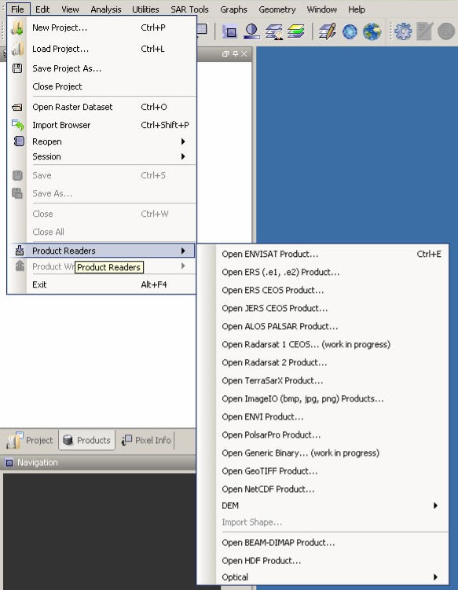
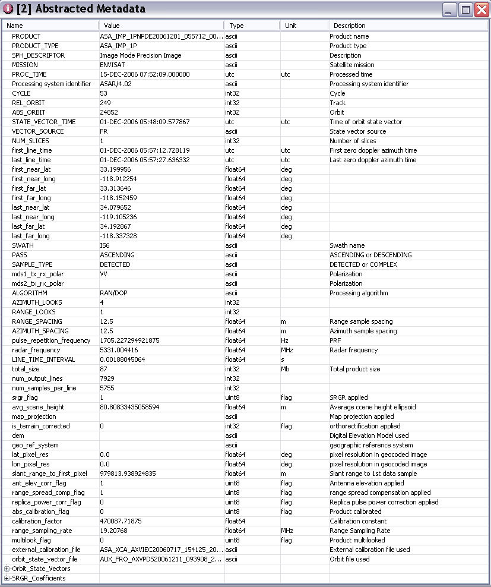

| Quick Start With The DAT | |
Image Products can be opened by either the Open Raster Dataset menu item in the File menu

or by selecting the reader directly from the Product Readers menu.

The Open Raster menu item will try to automatically determine which reader to use and it can open one or multiple data products stored on the hard disk in DAT. You can select more than one product, e.g. by pressing CTRL and selecting the desired products with the mouse.
By selecting the specific Product Reader, the path to datasets of that type can be stored and reused the next time you open a similar product.
After having opened the product, the data is listed in the Products View where you can examine product structure and metadata.
A Product consists of the following:
The information in the metadata and the bands created can vary according to the product.
Below is an example of an ENVISAT ASAR IMP product opened in the Products View.

Double click on the Abstracted Metadata to view all critical fields.

Double click on a band to open it in an Image View.
After you have opened an Image View you can modify the colors of the image using the colour manipulation window or overlay an opaque or semi-transparent bitmask with the bitmask overlay window. Both windows operate in non-modal mode, which means they float over DAT's main frame, and you can place them somewhere on your desktop.
To see what region of the world is covered by the data product, select the World Map View from the View/ToolViews menu.
Open the Settings dialog from the Edit menu. The Settings dialog allows you to customize the default data path directories for your Digital Elevation models and orbit files. For DELFT Precise Orbits and SRTM 3sec DEM, the Toolbox will automatically download required files as needed and place them in the folders specified in the Settings dialog. For ACE 30src DEM, you will need to download the files manually and place them in the folder specified in the Settings dialog.
With Projects, you can organise and store complex processing over multiple datasets.
Start by creating a  New Project from
the File menu. From the New Project dialog, browse for a folder and
enter the project name. A new Project folder with the Project name
given will be created along with a Project XML file which will store
information about your Project.
New Project from
the File menu. From the New Project dialog, browse for a folder and
enter the project name. A new Project folder with the Project name
given will be created along with a Project XML file which will store
information about your Project.
Next, use the Product Library to browse and select data products to import or double click on them to open them directly.
From the Project View you can double click on a product to open it in the Product View.
From the Product View you can examine a products metadata or double click on a band to open it in an Image View.